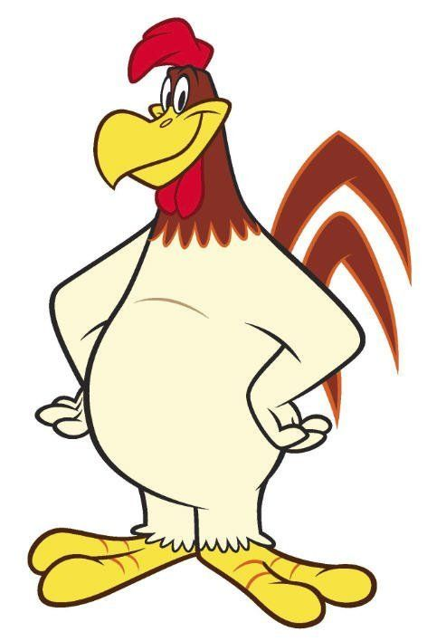

92%
92%

- STARRING
-
Jeff Bergman
Damon Jones
Mel Blanc
Љубиша Бачић - DIRECTORS
- Robert McKimson, Warren Foster
- RATING
- G
- THEATRICAL RELEASE
- August 31, 1946
- MOVIE SYNOPSIS
- The character of Foghorn Leghorn was directly inspired by the popular character of Senator Claghorn, a blustery Southern politician played by Kenny Delmar who was a regular character on The Fred Allen Show, a popular radio show of the 1940s.
- MPAA RATING
- G, for animated action violence, some scary cartoon images
- STUDIO
- Looney Tunes
- RUNTIME
- 87 mins
- GENRE
- Action/Adventure, Animation, Childrens, Musical and Performing Arts
- BOX OFFICE
- $94,240,635
- LINKS


New Yorker
Tulsa World
Washington Post
Slant Magazine
Baltimore Sun
IGN DVD
AV Club
rachelsreviews.net